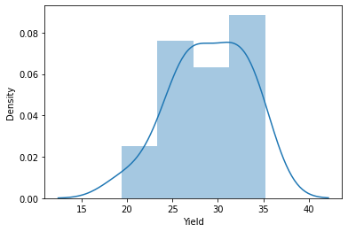

STATISTIK DISKRIPTIF
STATISTIK DISKRIPTIF#
Statistik deskriptif berkaitan dengan deskripsi data, menggambarkan informasi dari suatu data tersebut misalnya rata-rata, median, modus (mode), standar deviasi dan varian dari sekumpulan data yang dapat dianalisa dan divisualisasikan dengan tabel dan grafik agar mudah dibaca dan lebih bermakna.
Pandas adalah salah satu modul paket pada python yang digunakan untuk melakukan pengolahan data statistik yang fleksibel, ekspresif dan cepat. Pada artikel ini penulis membuat beberapa sample pengolahan data statistik menggunakan pandas diantaranya fungsi-fungsi sebagai berikut:
Membaca data dari file format csv dan memasukkan ke dalam dataframe.
Transformasi data.
Pivot Table
Visualisasi data ke-dalam grafik interaktif.
# memanggil modul pandas
import pandas as pd
#membaca data dari csv ke pandas
url="https://raw.githubusercontent.com/Opensourcefordatascience/Data-sets/master/crop_yield.csv"
data = pd.read_csv(url)
#menampilkan data
data
| Fert | Water | Yield | |
|---|---|---|---|
| 0 | A | High | 27.4 |
| 1 | A | High | 33.6 |
| 2 | A | High | 29.8 |
| 3 | A | High | 35.2 |
| 4 | A | High | 33.0 |
| 5 | B | High | 34.8 |
| 6 | B | High | 27.0 |
| 7 | B | High | 30.2 |
| 8 | B | High | 30.8 |
| 9 | B | High | 26.4 |
| 10 | A | Low | 32.0 |
| 11 | A | Low | 32.2 |
| 12 | A | Low | 26.0 |
| 13 | A | Low | 33.4 |
| 14 | A | Low | 26.4 |
| 15 | B | Low | 26.8 |
| 16 | B | Low | 23.2 |
| 17 | B | Low | 29.4 |
| 18 | B | Low | 19.4 |
| 19 | B | Low | 23.8 |
Mean Mean adalah nilai rata-rata dari kelompok data.
Rumus Mean :
Mean = rata-rata
\(x_{1}\) = nilai data ke-1
\(x_{n}\) = nilai data ke-n
\(n_{}\) = banyaknya data
import statistics as st
st.mean(data.Yield)
29.04
Median
median adalah nilai tengah data setelah diurutkan.
Rumus Median =
Rumus jika jumlah data ganjil :
\[M_{e}=\frac{X(n+1)}{2}\]
Rumus jika jumlah data genap :
\[M_{e}=\frac{X_{\frac{n}{2}}+X(_{\frac{n}{2}+1})}{2}\]
st.median(data.Yield)
29.6
Modus
Modus adalah nilai yang sering muncul dalam suatu kelompok data.
st.mode(data.Yield)
26.4
Varian
varian adalah rata-rata dari hitung penyimpangan kuadrat setiap data terhadap rata-rata hitungnya
Rumus Varian =
\(s^{2}\) = varian
\(x_{i}\) = nilai x ke-i
\(n\) = ukuran sampel
data.Yield.var()
17.89726315789474
Kuartil
kuartil adalah nilai-nilai yang membagi data yang telah diurutkan kedalam 4 bagian yang sama besar. Kuartil dinotasikan dengan notasi \(Q\). Kuartil terdiri dari 3, yaitu kuartil pertama (\(Q_{1}\)), kuartil kedua (\(Q_{2}\)), dan kuartil ketiga (\(Q_{3}\)).*
Rumus kuartil data tunggal: Untuk banyaknya data \((n)\) ganjil dan \(n+1\) habis dibagi 4.
\[Q_{1}=x_{(\frac{n+1}{4})}\]
\[Q_{2}=x_{(\frac{2(n+1)}{4})}\]
\[Q_{3}=x_{(\frac{3(n+1)}{4})}\]
Untuk banyaknya data \((n)\) ganjil dan \(n+1\) tidak habis dibagi 4.
\[Q_{1}=\frac{x_{(\frac{(n-1)}{4})}+x_{(\frac{(n+3)}{4})}}{2}\]
\[Q_{2}={x_{(\frac{2(n+1)}{4})}}\]
\[Q_{3}=\frac{x_{(\frac{(3n+1)}{4})}+x_{(\frac{(3n+5)}{4})}}{2}\]
Kuartil untuk banyaknya data \((n)\) genap dan habis dibagi 4.
\[Q_{1}=\frac{x(\frac{n}{4})+x(\frac{n}{4}+1)}{2}\]
\[Q_{2}=\frac{x(\frac{n}{2})+x(\frac{n}{2}+1)}{2}\]
\[Q_{3}=\frac{x(\frac{3n}{4})+x(\frac{3n}{4}+1)}{2}\]
Kuartil untuk banyaknya data \((n)\) genap dan tidak habis dibagi 4.
\[Q_{1}=x_{(\frac{n+2}{4})}\]
\[Q_{2}=\frac{x_{(\frac{n}{2})}+x_{(\frac{n}{2}+1)}}{2}\]
\[Q_{3}=x_{(\frac{3n+2}{4})}\]
Rumus kuartil pada data berkelompok
\[Q_{i}=bb_{Qi}+\frac{\frac{i}{4}n-f_{kjs}}{f_{Qi}}.p\]
\(i\) = kuartil ke-i
\(bb_{Qi}\) = batas bawah kelas kuartil ke-i
\(n\) = banyaknya data
\(f_{kjs}\) = frekuensi kumulatif sebelum kelas kuartil ke-i
\(f_{Qi}\) = frekuensi kelas kuartil ke-i
\(p\) = panjang kelas
data.Yield.quantile()
29.6
Kemiringan / Skewned
Skewned tingkat ketidaksimetrisan atau kejauhan simetri dari sebuah distribusi. Skewness diartikan sebagai kemiringan distribusi data. Sebuah distribusi yang tidak simetris akan memiliki rata-rata, median, dan modus yang tidak sama besarnya sehingga distribusi akan terkonsentrasi pada salah satu sisi dan kurvanya akan menceng
data.Yield.skew()
-0.46210360456902855
import matplotlib.pyplot as plt
import seaborn as sns
plt.figure()
sns.distplot(data.Yield)
plt.show()
/usr/local/lib/python3.7/dist-packages/seaborn/distributions.py:2619: FutureWarning: `distplot` is a deprecated function and will be removed in a future version. Please adapt your code to use either `displot` (a figure-level function with similar flexibility) or `histplot` (an axes-level function for histograms).
warnings.warn(msg, FutureWarning)
